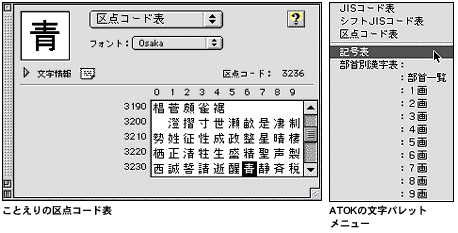
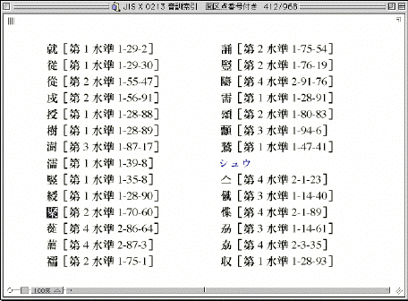
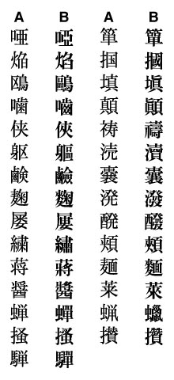

●例えば、「聚落」を入力したいときに「じゅらく」とひらがなで入力して変換すると、「ことえり」では「聚落」が候補として現れますが、「ATOK14」まででは表示されません。これは「聚」と「落」という２つの漢字がともにパソコンで使えるにもかかわらず、「聚落という熟語」が「ATOK14までの辞書には登録されていない」ことを示します。
●かな漢字変換ソフトから呼び出せない漢字の探し方は、大きく分けて三つあります。仮名漢字変換ソフトの文字パレットと呼ばれるツールを使う方法。参考図書などで調べた文字のコードで入力する方法。そして、青空文庫が独自に用意した「新JIS漢字総合索引」を使う方法です。
【文字パレットを使う方法】
●ことえりやATOKには文字パレットというツールがあり、「漢字表（部首別漢字表）」「記号表」「区点コード表」「JISコード表」「シフトJISコード表」などから構成されています。漢字や記号が、マウスの操作１つで入力できるので便利です。
●文字パレットは、メニューバーの右から３番目に出る鉛筆のアイコンをマウスでクリックし、「文字パレット表示」を選択すると画面上に現れます。
●文字パレットで、目的の漢字や記号をマウスで選択してクリックすると、ワープロやエディターのカーソルの立っているところに、その字が入力されます。全角のアルファベットも、文字パレットの「区点（JIS、シフトJIS）コード表」から入力できます。
●文字パレットの詳しい使い方は、かな漢字変換ソフトのマニュアルを参照してください。
【コードで入力する方法】
●『JIS漢字字典』（日本規格協会）や、複数の出版社から刊行されている『ワープロ漢字辞典』『パソコン・ワープロ漢字辞典』といったものを使うと、探したい文字のコードを調べられます。『新版漢語林』（大修館書店）など、一部の漢和辞典も、JIS漢字コードのコードを併記するようになっています。
●こうした参考図書ではしばしば、一つの漢字に対し、「区点コード」「JISコード」「シフトJISコード」など、いくつかのコードが示してあります。これらは、コード表中で文字が占める位置を、どのようなルールに従って表現するかの違いによるものです。JIS漢字コードという一つのものを表現する、三つの方法と理解してください。
●ATOKの場合
１）ATOKパレットを表示していない場合は、鉛筆メニューのアイコンから「ATOKパレット表示」を選びます。
２）ATOKパレットの「Ｒ漢」（ローマ字入力の場合）、もしくは「カナ漢」（かな入力の場合）をクリックし、現れたポップアップメニューから「コード入力」を選びます。
３）現れた入力ウィンドウの左のボタンをクリックすると、「JIS 」、「シフトJIS」、「区点」のいずれかを選べます。
４）コード番号を入力します。
５）入力ウインドウに、該当の文字が表示されます。
６）リターンキーを押すと、該当の文字が入力されます。
●ことえりの場合
古いバージョンのことえりでは、次のような手順でコード入力することができました。
１）全角数字で区点コードを入力し、スペースバーを２回押します。
２）表示される一覧表から該当文字を選択し、リターンキーを押します。
３）再度リターンキーを押して確定します。
ただし、現在のことえりでは、コード入力はできなくなっています。
【新JIS漢字総合索引の利用】
●新JIS漢字総合索引は、「部首・画数索引」、「音訓索引」と、青空文庫の入力でよく使う記号を集めた「記号一覧」からなる、電子索引です。部首・画数索引を使えば、部首と画数から、音訓索引を使えば漢字の読みから、目指す漢字を探せます。（右は、「じゅ」という読みから、音訓索引を使って「聚」を探した例。）
●見つかった漢字は、コピーしてエディターやワープロにペーストできます。
●この索引を使うためには、いくつかのソフトとフォント、ファイルが必要です。求められるものを、「青空文庫 「明日の硯箱」」にリストアップしました。導入時に少し手間がかかりますが、使うことのできる文字を確実に探せます。必要なフォントやファイルは全て無料で入手できますので、ゆっくりステップを踏んで、是非、索引の導入にチャレンジしてください。
●新JIS漢字総合索引には、第1〜第4水準までの漢字を収録してありますが、青空文庫の入力に使えるのは、第1第2水準の文字に限られます。第3第4水準の漢字は、使わないでください。
●新JIS漢字総合索引の成り立ちと使い方は、【「新JIS漢字総合索引」を使ってみよう】で詳しく説明しています。この解説を含む、「新JIS漢字時代の扉を開こう！」と名付けた文書では、JIS漢字コードに関して、青空文庫の活動を続けていく上で必要な情報をまとめて解説しています。
【入力時に使える文字】
●青空文庫の入力は、JIS X 0201で定義され、半角で表示されるラテン文字、数字、記号と、JIS X 0208で定義され、全角で表示される漢字（第1水準と第2水準）、かな、ラテン文字、ギリシア文字、キリール文字、数字、記号によって行います。
●JIS X 0208（JIS X 0201の文字は、ここにすべて含まれます。）にない文字を、外字と呼びます。
●WindowsやMacintoshでは、JIS X 0208のコード表の空き領域に、独自に文字を割り振って、外字の一部を使えるようにしています。 けれど、メーカー独自の拡張によって使えるようになった外字には、他の機種で使えるという保証がありません。
●独自拡張によって使えるようになった外字は、青空文庫では用いません。
半角で表示される、JIS X 0201のカタカナも使いません。
【外字の処理】
●外字は、入力者注で処理してください。例えば、
の「」は、青空文庫で使える第1第2水準の中にはありません。こうした場合には、
喉を掻き※［＃「てへん＋劣」、読みは「むし」、30-16］って
のように、代わりに「※」（区点コード0208、JISコード2228、シフトJISコード81A6）を入れ、さらに元の文字の形についての説明と読みを加えます。そのあとには、「ページ-行」の形式で底本の何ページ・何行目にあるかを記述します。
●外字の形を説明する際、左右に並んでいる部分は、「＋」（区点コード0160、JISコード215C、シフトJISコード817B）でつないでください。「たれ」や「にょう」との組み合わせにも、「＋」を用いてください。
「目＋爭」、「登＋おおざと」、「やまいだれ＋音」、「しんにゅう＋台」など
上下の関係にあるものは、「／」（区点コード0131、JISコード213F、シフトJISコード815E）でつないでください。
「くさかんむり／弓」、「白／十」、「山／松」など
上下、左右の関係にあるものを組み合わせて示す際は、「（）」（区点コード0142・0143、JISコード214A・214B、シフトJISコード8169・816A）を補って、位置関係をはっきりさせてください。
●「＋」や「／」で表しにくい場合には、以下のように説明してもかまいません。
※［＃「糾」の「糸」に代えて「虫」、読みは「きゅう」、145-1］
●外字は、多くの場合、底本でもルビ付きで使われています。上記の例にルビがついて、
となっている場合には、
喉を掻き※［＃「てへん＋劣」、30-16］《むし》って
のように入力します。
●外字注記はかつて、以下のように書いていました。
喉を掻き※［＃「※」は「てへん＋劣」、読みは「むし」、30-16］って
過去のファイルにさかのぼって、下線部を略した現在の形にそろえることは当面行いませんが、より簡潔な現在の形を推奨します。
【異機種間の互換性】
●JIS X 0208の空き領域にどんな外字が埋め込まれているかは、メーカー（OS）によって異なります。例えば、Macintoshで入力した修飾数字「○付きの１」（区点コード0901、JISコード2921、シフトJISコード8540）は、Windowsでは「（日）」と表示されます。
●このような「異機種間の互換性のない文字」は、
１［＃「１」は底本では○付き数字］ インターネット
のように、JIS X 0208に含まれる文字に置き換えた上で、入力者注を付けてください。
●区点コード0833から1594まで、JISコード2841から2F7Eまで、シフトJISコード84BFから889Eまでに割り振ってある文字や記号は、異機種間の互換性がありません。
 【微妙な字体差と包摂規準】
●底本で使われている漢字と入力したものとで、細部の形が微妙に異なっていることがあります。「果たしてこの字を使ってよいのか？」と、迷う場合もあるでしょう。その際、「よいか悪いか」の判断は、用いている漢字コードが「字体の揺れ幅」について定めた、「包摂規準」(１〜185番）にのっとって下します。青空文庫はJIS X 0208を使っていますから、その規準に従って、判断します。（加えて、JIS X 0213で新たに定義された186〜199番にも従います。）
●包摂規準とは、「この差ではコードを区別しない」という約束事の集まりです。ルールのすべては、JIS漢字コードの規格書（『7ビット及び8ビットの2バイト情報交換用符号化漢字集合』日本規格協会）の、「漢字の字体の包摂規準」（11〜23ページ）に定められています。（「JIS X 0208と0213規格票の包摂関連項目」の「JIS X 0208」の項、参照。）
●ここに定められた包摂規準に従えば、本来、右に示す29文字のAとBのパターンは区別されなければいけません。ところが過去の規格改訂時に犯した誤りとつじつまを合わせるために、例外として「同じコードで入力する」とされています。これらに関しては、底本と表示文字にＡとＢの違いがあったとしても、その差は無視してください。
●JIS X 0208の包摂規準では、しんにゅうの点が一つか二つか、草冠の横画が切れているか否かで、コードは区別されません。画面やプリントアウトの表示と底本にこの差があったとしても、違いは無視してください。
●細かな字体差を無視して入力しても良いのか、それとも外字として注記すべきか判断を迫られたときは、JIS X 0208の「漢字の字体の包摂規準」を参照してください。見きわめが付かなければ、reception@aozora.gr.jpに問い合わせてください。
【旧字入力の支援ツール】
●旧字作品の入力ファイルには、使うべきでない新字や俗字が、しばしば紛れ込んでしまいます。
●これらを見つけ出すために、「校閲君」と名付けたチェック・ツールを用意しました。詳しい使い方は、「旧字ファイルの新字・俗字を、校閲君で洗い出そう！」で説明しています。
●旧字作品の入力が終わったら、青空文庫宛にファイルを送る前に、必ず校閲君でチェックしてください。
●作業の途中で校閲君によるチェックをかければ、どんなものが新字、俗字になりがちか確認できます。その後の作業を正確に進める上では、有効でしょう。
●かつて旧字作品の入力、校正を体験された方は、自分の関わったファイルを校閲君でチェックし直してください。
●旧字、正字に置き換えるべきものが見つかったら、reception@aozora.gr.jpに、ファイルの修正を求めてください。
 入力にこの種のソフトをお使いの場合は、必ずフォーマット指定の項目で「テキスト」「TEXT」などを選択してください。
入力にこの種のソフトをお使いの場合は、必ずフォーマット指定の項目で「テキスト」「TEXT」などを選択してください。